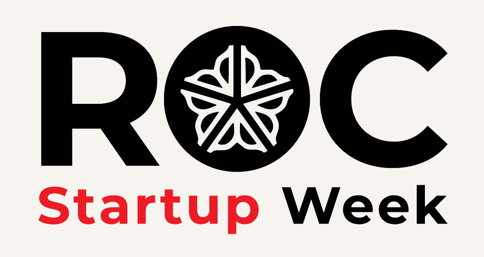
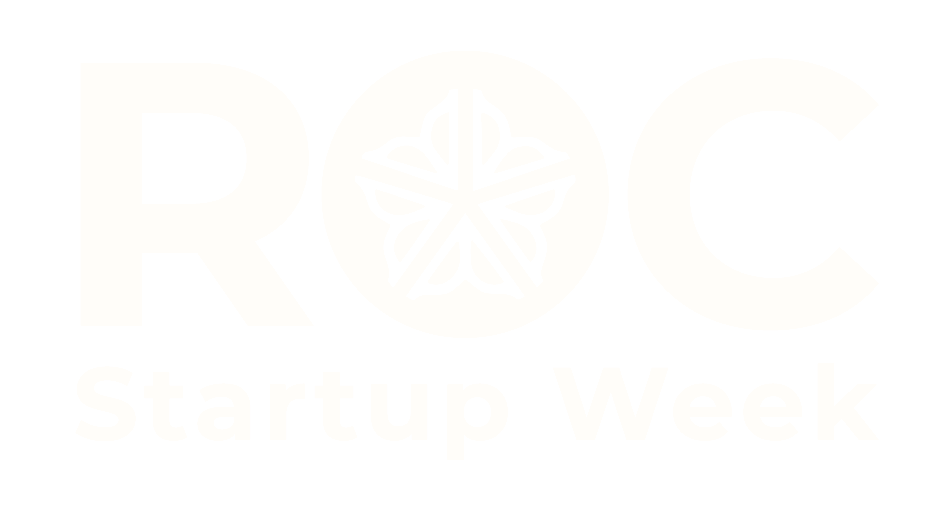

Full color
Use on birch, white, or other light solid backgrounds.
Download PNGOfficial Roc Startup Week logo files for web, social, presentations, and print. Preserve the logo proportions, leave clear space around the mark, and never recolor individual elements.

Use on birch, white, or other light solid backgrounds.
Download PNG
Use on black, dark gray, photography, or primary red.
Download PNGSingle-color campaign mark for dark backgrounds.
Download PNG
Full-color mark with alpha transparency for flexible placement.
Download PNG
Links directly to rocstartupweek.com.
Download PNGAbel for headlines. Montserrat for body copy, event details, and calls to action. Headlines stay regular-weight. Headliner event names appear bold and red.